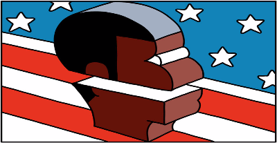

Supreme Court Justice
R. B. Ginsburg
vs Trump
The Editorial Page
The durst up between Justice Ginsburg and Donald Trump is treated as politic as usual. People will read this and snort: The justices are political animals like all the others; they decide based on their political views, not on the law.
This dismissiveness ignores and obscures the distinction between ideology and partisanship. Broadly speaking, Republicans and Democrats have differing conceptions of the role of the judiciary, the meaning of the Constitution and the proper approach to its interpretation. It is no surprise, and no tragedy, that judges appointed by Republican presidents tend toward one set of reasonably predictable conclusions and those named by Democratic presidents another.
But there are, or should be, limits to this linkage. Ruling on the reflexive basis of partisanship is different from a decision guided by ideology. That is one reason the court’s 2000 decision in Bush v. Gore was so disturbing. The five-justice conservative majority adopted a one-time-only expansive reading of the equal protection clause that conflicted with their usual narrow interpretation. This was a liberal jurisprudential approach in cynical service of a conservative political outcome: handing the election to George W. Bush.
In this context, Ginsburg’s remarks — like Scalia’s duck-hunting — present a problem, and not just for her. They drag the court down to the level of other political actors, into the partisan muck. They reinforce the public’s perception that this game, too, is rigged — more than it actually is. Evidence of its independence: this term’s surprise rulings upholdingaffirmative action and abortion rights.,/p>Judges aren’t the neutral umpires, mechanically calling balls and strikes, of Chief Justice John G. Roberts Jr.’s imagining. But they can aspire to that ideal, and should — on and off the bench.
Should President Mugabe
of Zimbabwe go?
Joe Sukule Column
JOHANNESBURG – The departure of Zimbabwe's President Robert Mugabe would be in "the best interests of everyone," former States Secretary of State Hillary Clinton said in an interview on Wednesday.
Clinton also told South African state television that the US would not resume aid to the Zimbabwean government as long as it could not be sure it would reach the people concerned.
"We’re encouraged by the new unity government that has been created. We are not yet ready to change our policy, but it is under review," Clinton said when asked about whether the US would support the new government financially.
"It’s important to us that any aid from any source get to the people of Zimbabwe," Clinton said in the interview given on Tuesday.
President Mugabe and his rival Morgan Tsvangirai on February 11 formed a power-sharing government tasked with steering Zimbabwe back to stability after disputed elections last year plunged the country into crisis.
Relations within the government remain tense.
Under the fledgling government’s watch, more than $800-million in credit lines have been secured to rebuild the shattered economy, and the International Monetary Fund (IMF) has said it will resume technical aid to Harare.
But that is still a fraction of the $8,5-billion the government says it needs, and private firms say they want more guarantees that the rule of law will be respected before they invest.
Clinton’s interviewer asked if she would "like to see President Mugabe go first before you can come in?" Clinton replied: "I think that would be in the best interests of everyone."
It was the first time that she had spoken about the fate of the ageing leader. Former president George Bush had called for Mugabe’s departure.
The secretary of state called on South Africa to apply more pressure on the Zimbabwean government.
"I think it’s up to the people and the government, and, frankly, the neighbours. South Africa has a big role to play in this," she said.
She recognised Mugabe’s "historic contribution" to Zimbabwe in a way that suggested she believed time was up for the man who came to power in 1980 when the country formerly known as Rhodesia gained independence from Britain.
"No one questions his early commitment to freedom and to an end of colonialism and oppression … But for whatever reason, the last years of his rule have hurt so many of his people," she said.
So it is not for us to make that determination, but we hope that the government, whoever is running it, will be devoted to reconstructing that country with its extraordinary potential and taking its rightful place as a developing country that holds such promise," Clinton said.
Black Live Matters. Blue Live Matters. Why the killings?
Mark Thomson Column
NAACP and the other poverty pimps are not interested in life, quality of life or a mind being a terrible thing to waste. They are interested in keeping a group of people convinced that somehow life isn’t fair, so bad behavior must be the answer. Imagine if all that energy spent on the recent riots and faux moral outrage were spent on creative ideas and producing products or services. Imagine if that energy were spent to help families, or to work for businesses that are struggling to be productive. What if all those rioters just worked at a job instead of tearing apart communities! People say they don’t want to work for minimum wage, but will work for nothing all day at tearing up a business someone else has built? Just be Constructive instead of Destructive. Why does anyone listen to those rich race baiters and crack dealers instead of those many leaders who are inspiring people to do great things?
There are far too many successful men and women with dark skin in America to continue to make the case that they are somehow incapable to compete with any other skin tone on an even playing field… as if skin tone has anything to do with being successful. The very idea of it is insulting. Whatever color you are, just make good choices. Follow the advice of Dr. Ben Carson, Herman Cain, Oprah Winfrey, Clarence Thomas, Gloria Mayfield Banks, Denzel Washington and Dr. Alveda King and all the others that made it to the top of their fields. This list is enormous!
However, there is a real assault against black lives, but it isn’t making the news every day. The most heinous act against black lives is the one that Margaret Sanger started by founding Planned Parenthood, the abortion industry that has always targeted blacks. Strong family values are discouraged and abortions are rampant, especially in black communities. When the abortion industry can get a young girl in their grasp, she will likely be back, maybe again and again. She is a victim as well as the baby. The abortion industry is where the war on blacks truly does still exist. Dr. Alveda King, has written and spoken out extensively about it. Black lives do matter. Life matters. Civility matters. Today #ProtectLifeOK posted this article from the Washington Times authored by J. Kenneth Blackwell that speaks to those lives that matter:
“Black lives matter” has become the slogan of anti-police protests across the nation, but the target of the protests is so misplaced that the motives of the so-called civil rights leaders behind the movement must be questioned. Do they really care about black lives? Or are they cynically exploiting isolated incidents, such as the death of Michael Brown, to inflame the black population and advance their own political interests?Today, on the somber anniversary of the Supreme Court’s Roe v. Wade decision, it’s time for black leaders to face up to the real danger threatening black lives in America. It isn’t the police. According to an anti-police brutality organization, the Malcolm X Grassroots Movement, 313 blacks were killed by “police, security guards and vigilantes” in 2013. It isn’t even black criminals, who, as Rudy Giuliani famously pointed out on “Meet the Press,” are responsible for 93 percent of violent deaths among blacks. Sources estimate that between 6,000 and 8,000 blacks are murdered each year.
No, the greatest danger to blacks is found precisely where we ought to be safest: in our mothers’ wombs. In 2010, the most recent year for which statistics are available, 138,539 black babies were aborted.
Thankfully, abortion is on the decline in America, down 3 percent between 2007 and 2010, according to the Centers for Disease Control (CDC). Strikingly, the number of surgical abortion clinics has plummeted, from 2,176 in 1991 to 551 today. Nevertheless, the CDC report that in 2010, a staggering 765,651 abortions were performed in the United States. Black women continue to have the highest abortion rate of any ethnic group, with a gruesome 483 abortions for every 1,000 live births.
The bottom line? I’ll say it again: 138,539 black babies, nearly one baby in three, were killed in the womb in 2010. According to the CDC, between 2007 and 2010, innocent black babies were victimized in nearly 36 percent of the abortion deaths in the United States, though blacks represent only 12.8 percent of the population. Some say the abortion capital of America is New York City. According to LifeSiteNews, the city’s Department of Health reported that in 2012, more black babies were aborted (31,328) than born (24,758). That’s 55.9 percent of black babies killed before birth. Blacks represented 42.4 percent of all abortions.
Legalized abortion is working out exactly as Margaret Sanger intended. Sanger, the founder of the nation’s largest abortion provider, Planned Parenthood, was part of the eugenics movement back in the 1930s. Her goal was to use abortion to cull what she considered inferior races from the human gene pool. According to Sanger, “Colored people are like human weeds and are to be exterminated.” She opened her first abortion clinics in inner cities, and it’s no accident that even today, “79 percent of Planned Parenthood’s abortion facilities are located in black or minority neighborhoods.”
Europe in turmoil. Who is to blame?
Antoine Li Column
According to Almeida, the world is in a global storm where there is transition, changes in order, power, terror, and democracy, and a major shift in the economy. In our time, people are being affected on a scale not seen before. Much has changed from the Cold War, where the world was relatively predictable and bi-polar. There has been a major shift in power at all levels, and there is a certain amount of order which we do not see anymore. This shift is not only seen from east to west, but also north to south. Governments have become less powerful, and civil society organisations, political parties, and trade unions are playing a greater role in decision-making. With the emergence of non-state actors as terrorist threats, we live in an uncertain world where not all parties are represented in key decisions.
The 2008 financial crisis has displayed the extent of interdependence and interconnection of the global economy. There has not been a global recovery, but a new mediocre recovery – showcasing slow growth and low job intensity. Almeida emphasized that even in the global context we are not masters of our national economic destinies. Our world is very much affected by the emerging economies of Brazil, China, and India to name a few.
According to Almeida, populism offers simple answers to complex problems. National entities have become challenged by globalization as there is a large mismatch between highly sophisticated global economies and the improvisation of national economies. He admonished against simple slogans preaching to be the solution of all problems. There is a fear factor as public opinions are insecure and people are afraid of development. If unchecked, this could lead to protectionism, nationalism, and potentially non-democratic solutions.
There are too many links to the past which have not been updated – the mechanisms of global governance today have been built after the war, and the manner in which the UN has organized itself makes one think of the Cold War. Although the G20 was founded as an alternative, instrumental arrangement to deal with the challenges of the financial market, the ambassador has been concerned that there has been less cohesiveness since 2010. It is pertinent to look at ways in which global governance has been effective, and apply those successful strategies.
Almeida said there are 2 ways of looking at the current situation in Europe, and both are equally valid. One, views the situation as a foreign policy crisis with a domestic spill-over. The other views the situation as a domestic problem with a foreign policy “detonator.” What makes the current European turmoil different from previous crises? This crisis is not about new treaties and constitutions that have been defeated in a referendum. There is an enlarging gap between citizens and politicians, and people now are questioning the existence of Europe and its fundamentals.
The after-shocks of the financial crisis has had a vast impact on the European economy. Today, a growth of 2 percent is considered good; unfortunately, it is not enough to create jobs and social security based on the current 11 percent unemployment rate. Having a banking union and capital market union was unthinkable before the financial crisis.
Europe is now surrounded by the “Ring of Fire” – countries such as Russia, the Caucuses, Afghanistan, the Arab world, Iraq, Iran, and Syria. This “Ring of Fire” is considered to be in Europe’s backyard, and currently there has been no solution to the turmoil, only a vast impact.
The ambassador spoke about the refugee crisis from a humanitarian perspective. As people are dying, being smuggled, exploited, and drowned, it is important to maintain solidarity, share responsibility, manage how Europe relates to foreigners, and manage its borders. The ground is now fertile for populism, fear, and xenophobia, which should be avoided as much as possible.
Almeida concluded by saying that the debate in the UK and Northern Ireland about potentially leaving the EU has made this storm more “perfect” than previous storms. It has added an existential dimension to the turmoil. However, the ambassador was largely optimistic. He hopes that the storm the EU is currently facing will not fundamentally change things, and that we should not let it be become the perfect storm.
Find your Dream Job Here
- We have openings in high paying jobs. With vacations and benefits. Call MMM-OOO-QQZN.
- New Software Developing Company. Search for Engineer - $98,000.00/year. With vacations and benefits. Call XXX-YYY-ZZZZ.
- Want to teach for New York City BOE. Starting at $40,000.00/year. Call 212-YGX-ABCD.
- Drivers wanted. TSJ-Freight Co. $60,000.00/year. With vacations and benefits. Call XXX-YYY-ZZZZ.
Call: AAA-BBB-CCCC.
Best Apartments in NYC
- Best apartment in NYC. 2 bedrooms - Utilities included- $2.700.00 (1 month-move in/1 month-deposit). Call EEE-FFF-GGGG.
- Best apartment in Harlem/NYC. 2 bedrooms with backyard - Utilities included- $3.500.00 (1 month-move in/1 month-deposit). Call EEE-FFF-GGGG.
- Best apartment in Prospect Heights/Brooklyn. 2 bedrooms with backyard - utilities included- $3.000.00 (1 month-move in/1 month-deposit). Call EEE-FFF-GGGG.
- Best apartment in NYC 3 bedrooms with penthouse. Utilities included- $10.000.00/month (1 month-move in/1 month-deposit). Call EEE-FFF-GGGG.
Pictures of the Day
- 